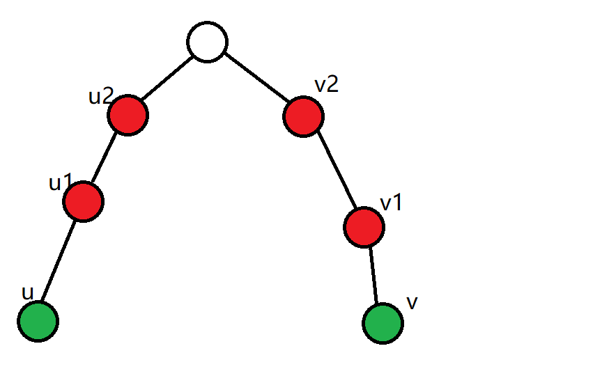

自己作死把博客搞掉了（又掉了），只有重写了$QWQ$。
块状链表
众所周知，数组查询方便，但插入和删除困难（复杂度极高 $O(n)$ ）；而链表恰恰相反，索引困难，而插入和删除简单。
那么当我们遇到既要动态插入删除，又要快速索引元素的问题时，有没有一种数据结构能够同时快速支持这两个操作呢？
以我们老祖宗的强大的智慧，答案当然是有，它就是——序列之王块状链表。Splay
听到这个名字，大概都能猜到它的主要思想：分块。
它将整个数列分成$\sqrt n$块，每一块$\sqrt n$个数用链表串起来，然后再用一个主链表将他们都传起来，具体的它长这样：

仔细想想，无论怎么操作都是$\sqrt n$（维护前缀和的分裂不是）的。
vector实现：
建立块状链表。 依次提取数组的前$B$元素当一个 $vector$ 添加。
找到第 k 元素。记录每vector维护的范围，确定$k$所在区间，用$k-l$即可找到（$l$是这个$vector$的首项）。
插入。首先，我们需要知道插入的位置。为了方便默认是在给定插入位置的前面插入；直接用$vector::insert$。为了保证时间复杂度，如果插入完导致这个$vector$大于$2B$，则在$B$处分裂这个$vector$。具体怎么分裂：
在块状链表里找到这个 $vector$ 接下来的 $vector$ 在接下来的 $vector$ 之前插入一个新建的 $vector$。
这个新建 $vector$ 应该保存刚才插入的 $vector$ 的 $B$ 元素后缀，也就是$vector::end()-B$ 这个 $iterator$ 区间。我们用 $B$ 分裂来平均分裂后的 $vector$ 长度，并同时保证没有 $vector$ 长度超过 $B$。
建完新的 $vector$，再删除这个区间。
删除。 同样找到位置，利用 $vector::erase$如果这个 $vector$ 的大小变为零，把这个 $vector$ 从块状链表删除。
$B$取$\sqrt n$
(写死我了)
关于主链
其实主链没有必要用$vector$强行插入，在每一块中间记录本块左右块的编号，然后直接在队尾加即可（常数小的一批，在下面的题中表现非常优秀）
例题：带插入区间K小值
这道题全凭各位常数。
过不了就删掉$split$函数。

本人并没有被卡常，所以被卡常应该不关我事？
分块
分块之神$Dyd$曾经说过：分块就是一种套路，你把代码每一部分换成暴力，调出一部分就全部调出来了，所以分块特别好调。
蒟蒻不懂，可能这就是蒟蒻比巨佬菜的原因。
树分块
一般可以用其他做法碾压树分块，所以题目较少。
例题：P6177 Count on a tree II/【模板】树分块
树上数数的不带修的强制在线的经典问题（菊花图，蒲公英可以轻松卡掉，但本人也不是很懂怎么卡）。
首先有一种更为简单（神秘）的做法：对于每个点拉一个$bitset$，比较显然是用轻重链剖分来维护，但是这样复杂度过大（感觉应该能过了），考虑怎么优化：对于每一条重链进行分块，预处理出每一块内$bitset$的并，复杂度：$O(m\log n \sqrt n \frac{n}{w})$甚至跑不过上面的东西，瓶颈在多块的合并，之后的操作，据题解所说可以用ST加速，但因它的理论复杂度应该是跑不过这道题的，只不过这东西跑不满，常数小，拿了最优解而已，我们不再深究，有兴趣的童鞋可以去看看巨佬Aestas16的题解。
这里只是举个例，证明树分块的时间不怎么滴。
下面才是正题。
什么是树分块
树分块就是像序列分块一样设置一个阈值$B$，然后在树上随机撒$\frac{n}{B}$个点，使其成为关键节点，然后使每一个点到距离其最近的关键节点的距离不超过$B$，这样我们就可以首先预处理出每两个关键节点之间的信息（所以树分块支持不了大量的修改操作），每次将需要计算的两点的距离最近的关键节点的信息拿出来，其他信息暴力统计即可，复杂度：$O(B^2+qB+\frac{n^2}{B})$，弱爆了。
然后重点讲一下撒点：
首先我们将所有的非关键节点入队，每次取出其中深度最大的节点，若他的节点的$1\sim B$级祖先都没有关键节点，就将它的$S$级祖先标记为关键节点，由上述方法可知每一次标记至少能控制$B$个节点，这些节点都不会被标记，且从这个节点出发最大移动距离最多为$B$，满足了我们的需要。
接下来，考虑对一条到根的路径上的所有关键点用$bitset$维护出他们两两之间的颜色，处理的时候我们可以使用递推的方式即：$b_{i,j}=b_{i,j-1}orb_{i+1,j-1}$，所以我们可以用最多$O(n)$的时间统计出每相邻关键节点的答案，其他的答案再两两统计，由于点对最多有$\frac{n^2}{B^2}$，所以预处理的复杂度为$O(\frac{n^2}{B}+\frac{n^3}{wB^2})\approx O(n\sqrt n+\frac{n^2}{w})$（感觉没前途啊）。
之后就简单了，将答案拆成四部分即可：

其中红色的节点表示关键节点，绿色节点表示查询节点，查询节点到最深的关键节点暴力做，最高的关键节点之间也暴力做，那么最终复杂度为：$O((n+m)\sqrt n + \frac{n^2+nm}{w})$。（不知到为什么被SPOJ卡掉了）
温馨提示，除非想不到其他解法，还是别写这个了。
带修改莫队
总所周知，普通的莫队是不能支持修改操作的，但是有些题目它就是让你支持修改，而且除了莫队你还不会其他的算法，这个时候我们就需要对莫队进行改进，让其支持修改。
首先思考一个问题，如果所有的修改操作都在查询操作之前，这个问题该怎么解决呢。
这其实是一个$sb$问题，将所有的修改操作维护完了，直接上普通莫队就行了。
问题的关键来了，如何使我们的修改操作重复执行的操作尽可能少。
有的人可能就会说了，将任意两段连续的修改操作之间的询问操作统计起来跑莫队不久行了么。
这样虽然可以使修改操作执行的次数很少，但是当询问操作很少的时候（比如两次），可以轻松将复杂度卡到线性（不带根号的原因是因为询问很少），这样就能使复杂度接近$O(nm)$很挫。
我们考虑定义三维：$[l, r, time]$，意味着查询的起始，终点，需要完成前$time$次修改操作。
根据分块的时间复杂度平衡思想，首先考虑将序列分成$len$块，考虑将$l$，$r$都放入块中，首先按$l$的块的编号排序，然后$l$的块的序号相同的询问再按$r$的块的编号排序，$l$和$r$的块的编号都相等的再按需要修改的次数升序排序。
首先为什么要这么做呢，一共有$len$块，令每块长度为$limit$（则$n$可以粗略的认为是$len\times limit$），那么移动$l$和$r$的时间复杂度为$len^2\times limit=n\times len$，之后考虑修改操作的进行次数，令总修改次数为$cnt$次，那么最坏情况下移动次数为$len^2*cnt$，双方取平衡，得到$limit=\sqrt[3]{n^4cnt}$。
树上莫队
我们回顾一下树分块的那道题，我们发现这样的做法及其丑陋（但支持强制在线这一点就很香），我们想一想如果不是强制在线的话我们应该怎么搞，首先在树上进行莫队操作的主要难点，一般来说能将树转化成序列的我们优先考虑，思考这题如何转成序列，我们使用一个叫欧拉序的东西，具体构造方法。
1 | 对这棵树进行dfs，将任何第一次访问的节点加入序列，当节点回溯时再将这个节点加入序列。 |
我们回过头来重新观察这道题，设$i$节点在序列中第一次出现是$st[i]$，第二次出现是$ed[i]$，那么对于对于任意询问节点$x$，$y$，设$st[x]<st[y]$，分类讨论可以得到。
1.$lca(x,y)=x$，画图可以得到答案就是序列中$ed[x]\sim st[y]$之间所有只出现过一次的数所包含的不同种类（所以第一次出现就增加第二次出现就减少）。
2.$lca(x,y) \ne x$，不难发现此时$y$不可能是$x$的父亲（不然的话为什么st[y]不在st[x]前面），所以画个图分析，此时的$ed[x] \sim st[y]$没有包含$lca(x,y)$，特判即可。
还有一道和这个题一摸一样的拓展版（多了修改，但无伤大雅）：[WC2013] 糖果公园，快去切掉吧。
倍增分块+底层线段树+底层分块
自己都在怀疑赛事怎么可能有人写出来
$5e5$的神仙分块。
1 | 一个数列，实现如下两种操作。 |
一看这题的第二问，哈，我会，线段树。
冷静下来看第一问，*?~&%$#&^。
毕竟是$lxl$的题，我们首先得往分块上想。
仔细思考之后就会发现这题必须要用数据结构维护值域和序列。
听说这题可以用分块套Splay（不愧是序列之王）只要你没有常数。
因为值域$10^9$，考虑一种神奇的分块：倍增分块，这是一种什么样的分块呢，就是将值在$[B^i,B^{i+1})$的数分在一起。
思考为什么考虑这种分块：
我们使用线段树暴力的时候，一定会先建一课序列线段树。
- 如果区间的最大值$\le x$直接跳过。
- 如果区间的最小值$> x$打上懒标记之后返回。
- 递归进入子区间。
仔细想一想，如果序列是一大一小交替排布，每一次更改就是大常数的$O(n)$，跑不过暴力。
我们假设已经将值域分成了$cnt$个块，每个块里都有一个序列线段树。
这样整体上看最坏复杂度为$n\times cnt \times \log n$
但是思考分块的作用。
- 如果一个块上界$\le x$直接跳过。
- 如果一个块的下届$> x$，这一部分将被重构，那么这一部分复杂度是：$m\times cnt \times \log n$的
- 不然就递归。
我们发现这样做了之后前两种情况的复杂度之和块的数量有关，但是，第三种情况的最差复杂度是线性的。
我们假设情况三的块长为$len$，由上我们发现每次修改最多会有一块成为情况三，所以最多就会操作$cnt \times \frac{len}{x}$次，我们将这式子拆开分析，首先如果每个块都已经因为上面的操作变成同一个值域了的话，显然最多会有$cnt$块需要递归，然后每一块内我们最多递归$\frac{len}{x}$次（之后就减为1了）。
考虑最叼钻的情况，即$\forall x=l$的情况，$l$就是当前块的左边界，我们就要让$n \times \log n \times cnt \times \frac{len}{l}$最小，考虑固定$\frac{len}{l}$，$cnt=\log_B^{10^9}$，最终的复杂度：
$$
O((n+m) \times \log_B{10 ^ 9} \times \log n+n \times B \times \log n \times \log_B^{10^9} )
$$打开几何画板，但是并没有画出来，$B$的理论最优为$16$，实测的话：应该取$2 \sim 4$。
之后就会发现卡空间了，线段树的空间主要消耗在叶子，我们可以设置一个常数$K$，让线段树$\le K$的区间的处理直接变成下传标记在序列上暴力，之后再上传。我们可以这样很可观地以大常数的时间代价换取空间（这就是传说中底层分块）。
这样的话大家就可以完成rgxsxrs啦。
分块就先这样告一段落了，我们进入下一个专题。
二维线段树
这个东西考的不多（不如线段树套平衡树），时间复杂度：大常数的$n \log^2 n$，空间复杂度：$n\log n$。
具体是干啥用的呢，是维护矩阵信息用的（为啥不套平衡树），具体一般是对题目所给的二维的其中一维建线段树，再在这个线段树上的叶子节点建立另一颗线段树，维护另一维的信息，然后查询即可。
例题：[Mosaic](Problem - 4819 (hdu.edu.cn))。
这里简述一下题意：
1 | 多组数据（T <= 10），每组数据需要维护一个正方形矩阵（less than: 800*800），然后多次询问，每次询问一个子矩阵中的最大值+最小值/2向下取整。 |
是不是感觉很无脑。
网络上还流传着另一种二位线段树的写法：四叉树写法，这里不过多介绍（感觉并不优秀），只引用一下定义。
1 | 二维线段树是一棵 四叉树，树上每个结点保存 一个矩形和一个域，非叶子结点一定有 二或四 个儿子结点，儿子结点表示的 四个矩形交集为空，并集为父结点表示的 矩形；叶子结点表示的矩形长宽均为1，域则表示了需要求的数据，每个父结点的域可以通过 四个儿子结点得出。 |
矩阵求逆
定义
令$A$是一个矩阵，如果存在一个矩阵$B$满足：
$$
BA=I
$$
则称$A$矩阵可逆，且$B$称为$A$的逆矩阵。
如何求逆：高斯-约旦消元
一堆证明
矩阵的逆要么没有要么唯一
首先要知道若$A$可逆，则逆唯一。
证明：若$B$和$C$都是$A$的逆，由定义：$AB=BA=I,AC=CA=I$
则：$B=IB=(AC)B=(AB)C=C$，即$B=C$，证毕。
判断矩阵是否可逆
行列式判断法
设$n$阶矩阵：
$$
A=\begin{bmatrix}
a_{1,1} & a_{1,2} &a_{1,3} & \dots & a_{1, n}\\
a_{2,1} & a_{2,2} &a_{2,3} & \dots & a_{2, n}\\
\vdots & \vdots & \vdots & \ddots & \vdots\\
a_{n,1} & a_{n,2} &a_{n,3} & \dots & a_{n, n}\\
\end{bmatrix}
$$
构造其代数余子式：
$$
A^*=\begin{bmatrix}
A_{1,1} & A_{1,2} &A_{1,3} & \dots & A_{1, n}\\
A_{2,1} & A_{2,2} &A_{2,3} & \dots & A_{2, n}\\
\vdots & \vdots & \vdots & \ddots & \vdots\\
A_{n,1} & A_{n,2} &A_{n,3} & \dots & A_{n, n}\\
\end{bmatrix}
$$
代数余子式和余子式：
定义： 在n阶行列式中，划去元aij所在的第i行与第j列的元，剩下的元不改变原来的顺序所构成的n-1阶行列式称为元aij的余子式。
数学表示上计作$M_{i,j}$。
余子式定义
$a_{i,j}$的代数余子式 [3] ：$A_{i,j}=(-1)^{i+j}M_{i,j}$。